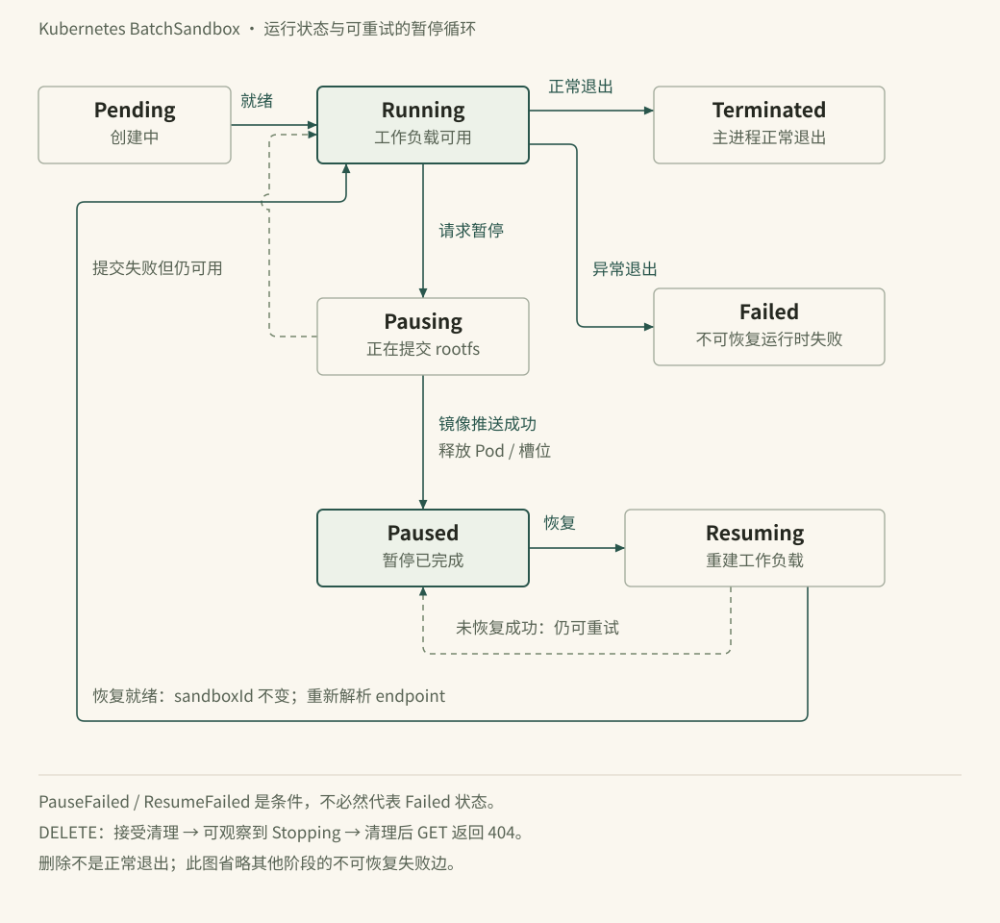

状态机：暂停、恢复、快照与过期
前十二篇讲的是「怎么把沙箱跑起来」。这一篇讲它怎么结束、怎么暂停、怎么回来。
在沙箱平台上，这些问题的答案会直接决定成本。一个只顾创建的实现，会让空闲沙箱吃掉整个集群；一个只顾回收的实现，会让用户的工作现场凭空消失。OpenSandbox 的答案由四个独立机制拼成：绝对过期、暂停/恢复、快照、以及访问驱动的续期与空闲暂停。
过期是绝对的
创建时的 timeout 是一个绝对 TTL，不是空闲超时。文档写得很明确：服务器或运行时重启都不会重置它，所以沙箱寿命可以只从创建时间推算、可审计。
这条规则有两个推论。
第一，暂停不延长寿命。文档原话是「expiration remains the original request-time clock reading plus that timeout; pausing and resuming do not extend it」。所以一个沙箱不会因为被反复暂停而永生。
第二，续期 API 可以缩短。POST /sandboxes/{id}/renew-expiration 设置的是一个绝对时间 expiresAt——它可以早于、等于或晚于当前值，只要还在未来。server.max_sandbox_timeout_seconds 只限制创建时的 timeout，不限制续期。
这条反直觉的语义有个实际陷阱，文档专门点了：SDK 的 renew(duration) 算的是 now + duration，不是 current expiresAt + duration。如果还剩 30 分钟，你「续期 5 分钟」，实际是把寿命砍短了。需要「只延长」的调用方必须自己先读当前值。
第 9 篇的 mini_osb.py 里 expires_at() 就是这条规则的十行实现：now + timeout，暂停不动它，扫描只看它。
暂停/恢复：三种后端，三种代价
| Docker | Kubernetes 容器 | Fast Sandbox | |
|---|---|---|---|
| 暂停做什么 | 容器级 pause（先冻结主容器，再冻结 sidecar） | 提交 rootfs 为 OCI 镜像并推送、释放 Pod 与池槽位 | 检查点写入 artifact store，释放 Fastlet 容量 |
| 恢复做什么 | 容器级 unpause（先解 sidecar） | 改写 template 为最新快照镜像、重建运行时 | 在任意 Fastlet 恢复检查点 |
| 保留什么 | 内存与进程现场 | rootfs（内存默认不保留，QEMU 模式例外） | rootfs + vmstate + 内存 |
| 恢复后地址变吗 | 不变（同一容器） | 变，需要重新解析 endpoint | 变（可能换宿主机），必须重新解析 |
| 限制 | 无特殊限制 | replicas=1 |
无特殊限制 |
| 算力足迹 | 保留（进程被冻结） | 释放 | 释放 |

这张表说明「暂停」在三种后端上不是同一件事。Docker 的 pause 只是冻结，不省内存；Kubernetes 与 Fast Sandbox 才是真的把算力还回去。
第二行的顺序值得再提一次：暂停先冻结主容器、再冻结 sidecar；恢复先解 sidecar、再解主容器。因为主容器一解冻就会发网络请求，此时 egress 必须已经在工作。
快照不是暂停。 文档为 Kubernetes 后端把两者分得很清楚：暂停是内部机制，目的是释放算力并保留连续性（同一沙箱 ID）；快照是公开产物，目的是把状态变成可复制的起点（新沙箱 ID）。两者共用一部分提交机制，但语义不同。
Fast Sandbox 里这个区分同样成立：暂停写检查点并释放 Fastlet；快照把那套机制发布成模板可用的制品，从快照创建出来的是新沙箱——「快照是起点，不是延续」。
持久性到底由什么保证
这是本节最重要的一段，因为它决定了「暂停能不能当备份用」。
对 Kubernetes 后端的 rootfs 快照：只有快照达到 Succeed 且镜像已推到配置的 registry，root 文件系统才是持久的。一个被接受的暂停请求、或处于 Pending/Committing 的快照，不提供任何持久性保证。
之后发生的更改留在容器的可写层里，并且不会在以下情况自动快照：进程退出、容器 OOM 被杀、Pod 进入 Failed、Pod 被驱逐、节点不可用。生命周期 API 目前不提供「故障后快照」或「故障后恢复」操作，Kubernetes 重启产生的新容器也不继承旧的可写层。
文档还提到一条「尽力而为」的运维救急路径：image-committer 有时能在容器元数据与可写快照还在源节点上时，直接从 containerd 读已停止的容器。但它明确声明这不是受支持的持久性契约——containerd/kubelet 的 GC、Pod 替换、节点丢失、容器身份复用都可能让旧层不可用或不可辨识。
结论很实用：需要跨异常存活的数据放持久卷或外部服务；需要可复现的环境状态就显式做 rootfs 快照。挂载卷里的文件按该卷自己的持久与备份行为走，不包含在 OCI rootfs 快照里。
访问驱动的两个方向
「过期」是减法，「续期」是加法。上游把这件事做成了两个独立机制，方向相反但共用「访问即信号」。
renew-on-access（OSEP-0009）：访问延长寿命。它有两个触发源——服务器代理请求、以及经 Redis 投递的 ingress 网关事件。按沙箱 opt-in 由创建时的 lifecycle.renewalPolicy 控制；旧的 extensions["access.renew.extend.seconds"] 在整个 1.x 期间仍受支持。
空闲暂停（OSEP-0024）：不访问就省算力。创建时声明：
"lifecycle": { "idlePolicy": { "idleTimeoutSeconds": 600, "onIdle": "pause", "wakeOnAccess": true } }- 有
idleTimeoutSeconds：空闲 X 秒后自动暂停； - 没有：只做「唤醒型」策略，不主动暂停；
wakeOnAccess: false：保持「只能手工恢复」的旧行为；- 省略整个
idlePolicy：完全保持今天的行为。
服务器侧的实现在 integrations/idle_pause/ 下，模块划分能看出设计：activity（记录活动）、decision（判定是否空闲）、executor（执行暂停）、inventory（枚举沙箱）、locking（分布式锁）、probe（探针）、sweeper（周期扫描）、redis_client。
probe 与第 10 篇的 OpenSandbox-Skip-Activity: skip 哨兵是一对：探针不能重置它自己测量的时钟。文档对这个哨兵的安全分析很干脆——伪造它只会伤到自己，因为你的沙箱会显得更空闲、更可能在使用中被暂停，而下一个普通请求会把它唤醒。
这就是「自动暂停」能被接受的前提：恢复必须是自动且便宜的。如果唤醒需要人工，空闲暂停只会制造事故。
客户端侧的池：把创建挪到前面
还有一个与时间强相关的机制不在服务端：SDK 里的客户端沙箱池（实验性，Python/JS/Kotlin/Go 有，C# 暂缺）。
它池化的不是 Sandbox 对象，而是预热好的、状态为 Ready 的沙箱 ID。两个并发流程：
- 预热（仅 leader）：后台 reconcile 循环在持锁节点上计算空闲缺口并补齐，空闲成员带 TTL 放进状态存储；
- 取用（任意节点）：
acquire()从存储弹出空闲 ID，连上客户端，可选健康检查与renew()到调用方给的超时，然后交给调用方。
三个性质值得记住：
- 没有
release()。 沙箱是短命的；acquire()返回后它就归你，直到你destroy()/kill()。 max_idle限制的是暖缓冲，不是借用中的沙箱数量，也不是DIRECT_CREATE兜底创建的数量——池不是并发限流器。AcquirePolicy决定空池行为：FAIL_FAST（最多试一个）、DIRECT_CREATE（默认，现建）、RETRY_NEXT_IDLE、RETRY_NEXT_IDLE_THEN_CREATE；max_acquire_retries默认 3，限制的是总候选尝试数，不是额外重试次数。
第 2 条和第 3 条合起来回答了一个常见误解：池化不会让你的沙箱变少，只会让你的等待变少。要控制资源，得靠 TTL、空闲暂停和配额。
失败语义的细节
状态机在边界上的行为，往往比正常路径更能说明设计质量。文档给的清单：
- 重复暂停 →
409；对非运行态恢复 →409。 - 删除后恢复 →
404（不是「悄悄复活」）。 - Kubernetes 删除：
DELETE返回204且 SDK 的kill()在删除被接受时返回；之后轮询GET会看到Stopping，清理完成后变404。用Noop回收策略的池会保留进程，所以那个404不确认运行时已终止。 - Docker 并发冲突：删除进行中、或容器已不在暂停/恢复所需状态 →
409；主容器不存在 →404；sidecar 失败与回滚失败保留500。 - Fast Sandbox：只有 Ready 运行时可以暂停；UID 不匹配或缺少检查点 →
409。
「404 不代表进程死了」这条尤其值得记住。它是异步删除的必然产物，也是第 17 篇运维讨论里最容易误判的一处。
本章要点
- 过期是绝对 TTL：重启不重置、暂停不延长；
renew-expiration设置绝对时间，可以缩短；SDK 的renew(duration)从now算。 - 暂停在三种后端上含义不同：Docker 冻结、Kubernetes 提交 rootfs 并释放 Pod、Fast Sandbox 检查点并释放 Fastlet。
- 暂停 ≠ 快照：前者释放算力保连续性（同 ID），后者产出可复用起点（新 ID）。
- 持久性只由「快照
Succeed+ 镜像已推送」保证；异常终止不会自动快照。 - 续期与空闲暂停是一对反向机制，都建立在「访问即信号」上；空闲暂停的前提是唤醒必须自动。
- 客户端池池化的是沙箱 ID，没有
release()，max_idle不是并发上限。 - 失败语义要按后端记：重复暂停 409、删除后恢复 404、
404不代表进程已死。
本章源码入口
| 路径 | 看什么 |
|---|---|
server/opensandbox_server/services/snapshot_service.py |
公开快照的状态机与持久化 |
server/opensandbox_server/services/snapshot_runtime.py |
Docker 与 Kubernetes 两种提交实现 |
server/opensandbox_server/integrations/renew_intent/ |
续期意图的产生与消费 |
server/opensandbox_server/integrations/idle_pause/ |
空闲暂停的判定、锁、执行、扫描 |
server/opensandbox_server/api/schema.py |
SandboxLifecycle、IdlePolicy、RenewalPolicy |
docs/guides/pause-resume.md |
暂停/恢复的完整语义与持久性边界 |
docs/guides/client-pool.md |
客户端池的调度与策略 |